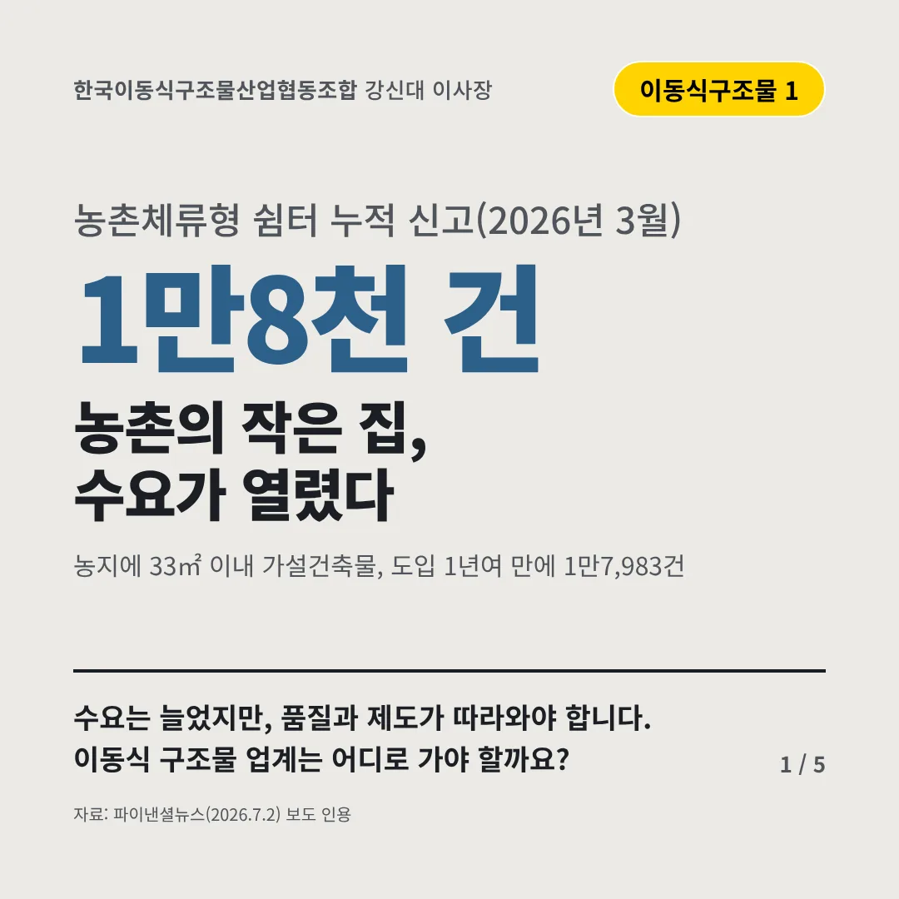
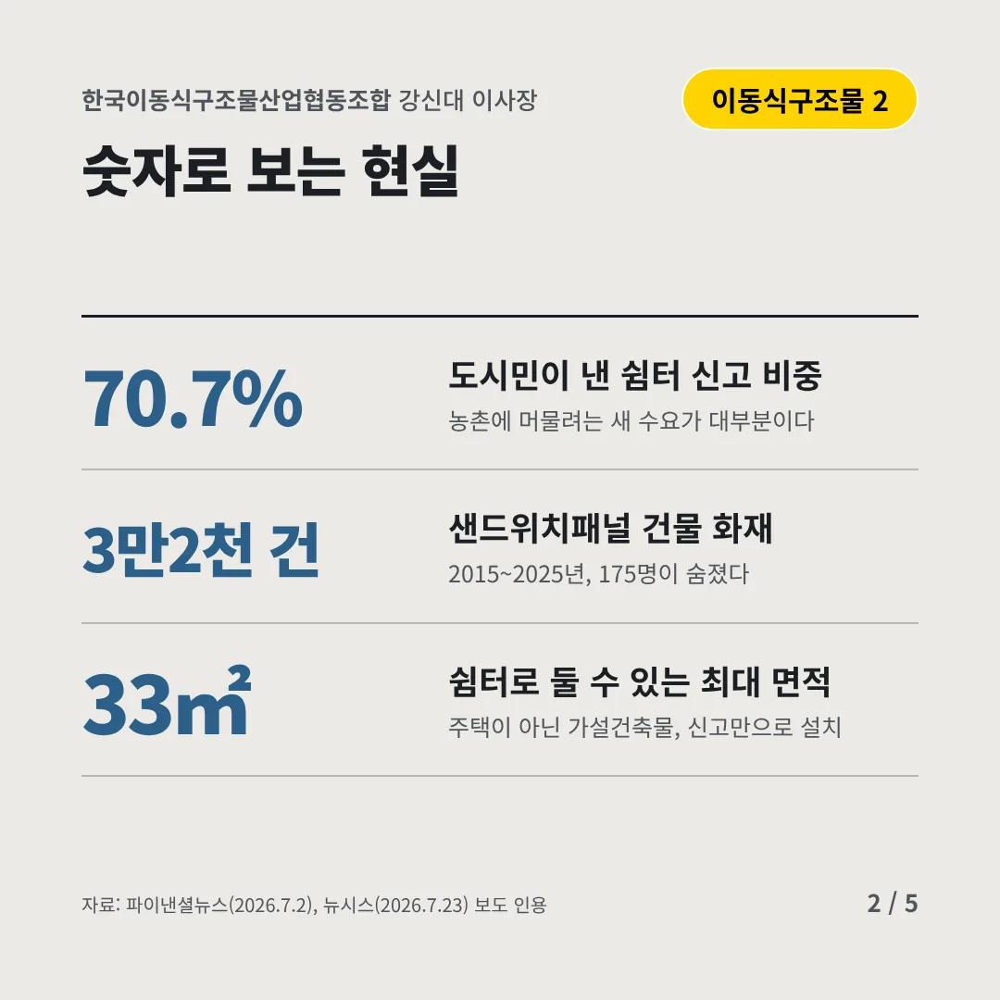
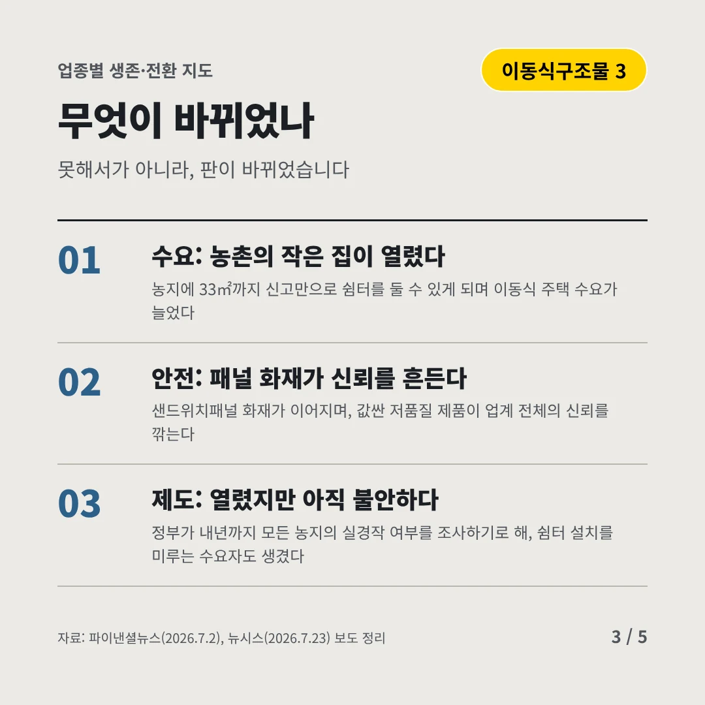
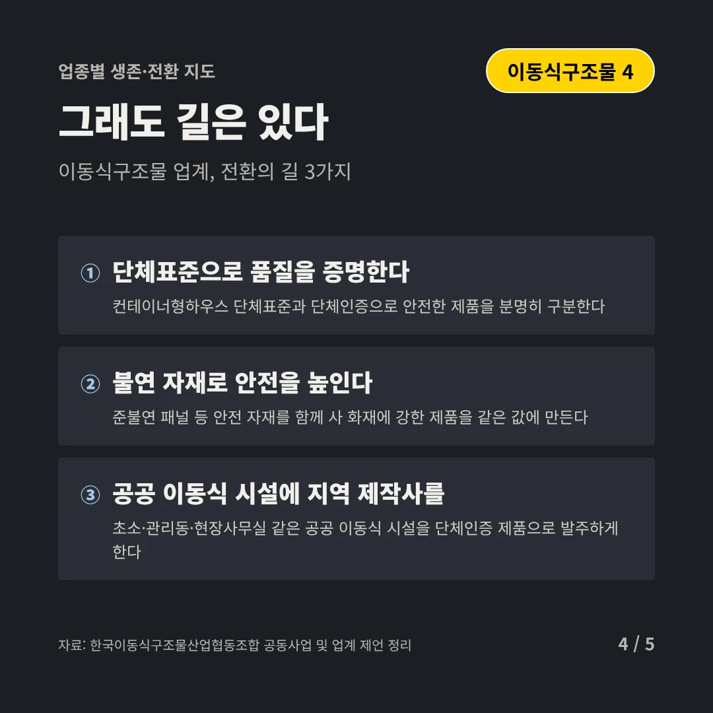
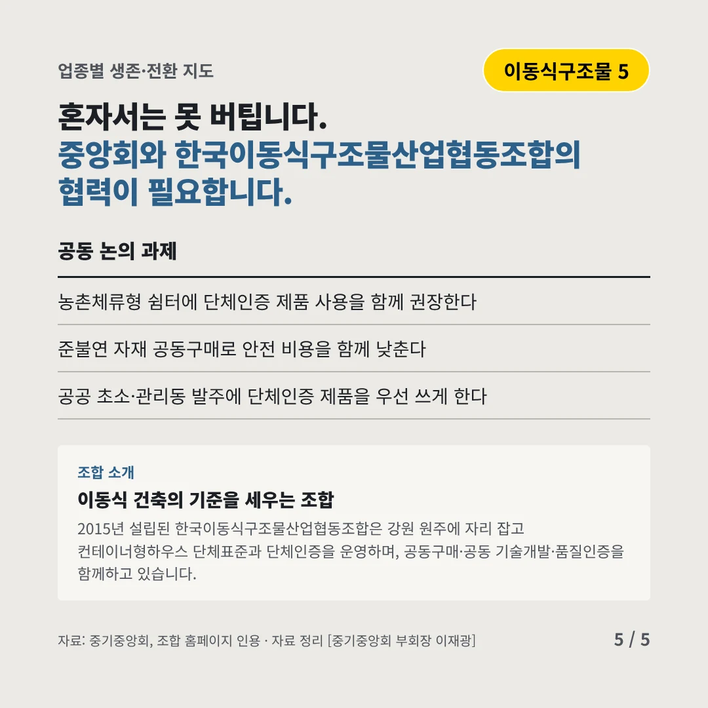
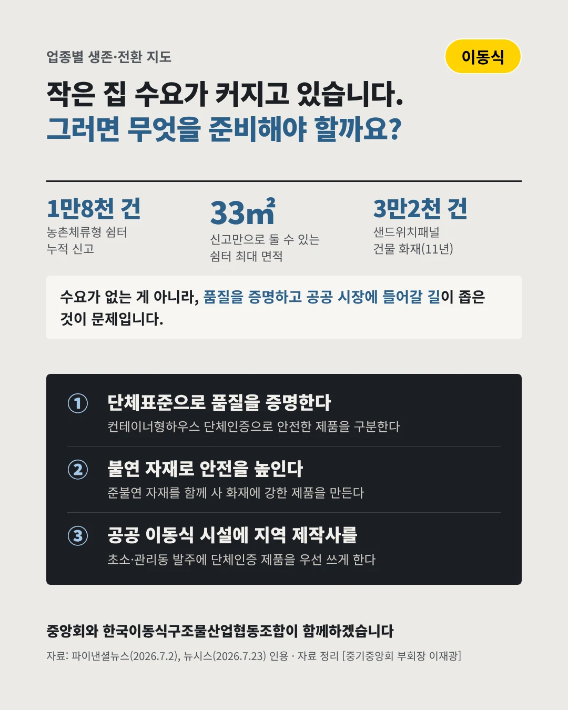

한국이동식구조물산업협동조합강신대 이사장
농촌의 작은 집, 수요가 열렸다
1만8천 건 농촌체류형 쉼터 누적 신고(2026년 3월)






수요는 늘었지만, 품질과 제도가 따라와야 합니다. 이동식 구조물 업계는 어디로 가야 할까요?
숫자로 보는 현실
- 70.7%도시민이 낸 쉼터 신고 비중농촌에 머물려는 새 수요가 대부분이다
- 3만2천 건샌드위치패널 건물 화재2015~2025년, 175명이 숨졌다
- 33㎡쉼터로 둘 수 있는 최대 면적주택이 아닌 가설건축물, 신고만으로 설치
무엇이 바뀌었나
- 수요: 농촌의 작은 집이 열렸다농지에 33㎡까지 신고만으로 쉼터를 둘 수 있게 되며 이동식 주택 수요가 늘었다
- 안전: 패널 화재가 신뢰를 흔든다샌드위치패널 화재가 이어지며, 값싼 저품질 제품이 업계 전체의 신뢰를 깎는다
- 제도: 열렸지만 아직 불안하다정부가 내년까지 모든 농지의 실경작 여부를 조사하기로 해, 쉼터 설치를 미루는 수요자도 생겼다
그래도 길은 있다
- 단체표준으로 품질을 증명한다컨테이너형하우스 단체표준과 단체인증으로 안전한 제품을 분명히 구분한다
- 불연 자재로 안전을 높인다준불연 패널 등 안전 자재를 함께 사 화재에 강한 제품을 같은 값에 만든다
- 공공 이동식 시설에 지역 제작사를초소·관리동·현장사무실 같은 공공 이동식 시설을 단체인증 제품으로 발주하게 한다
한 장 요약

조합 소개
2015년 설립된 한국이동식구조물산업협동조합은 강원 원주에 자리 잡고 컨테이너형하우스 단체표준과 단체인증을 운영하며, 공동구매·공동 기술개발·품질인증을 함께하고 있습니다.
자료: 파이낸셜뉴스(2026.7.2), 뉴시스(2026.7.23), 한국이동식구조물산업협동조합 공동사업